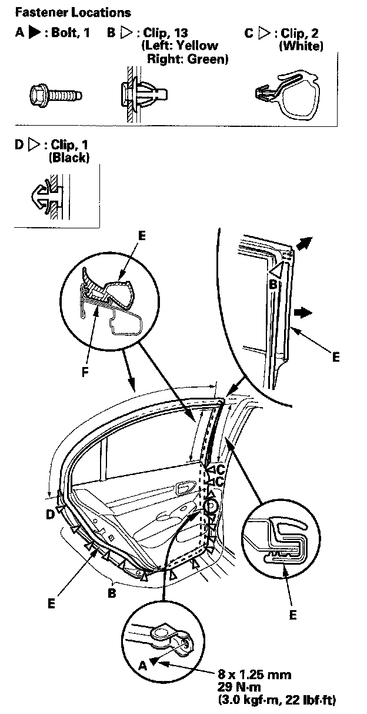

Rear Door Weatherstrip: Service and Repair
Rear Door Weatherstrip Replacement4-door
NOTE:
- Put on glove to protect your hands.
- Take care not to scratch the door.
- Use a clip remover to remove the clips.

1. At the B-pillar, remove the door checker mounting bolt (A).
2. Detach the clips (B, C, D), then remove the door weatherstrip (E).
3. Install the weatherstrip in the reverse order of removal, and note these items:
- Check if the clips are damaged or stress-whitened, and if necessary, replace them with new ones.
- Make sure the weatherstrip is installed in the holder (F) securely.
- Apply medium strength type liquid thread lock to the door checker mounting bolt before installation.
- Check for water leaks.